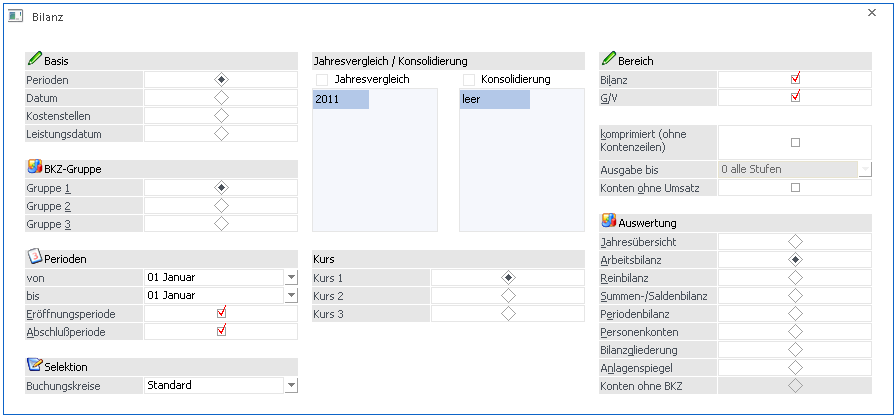
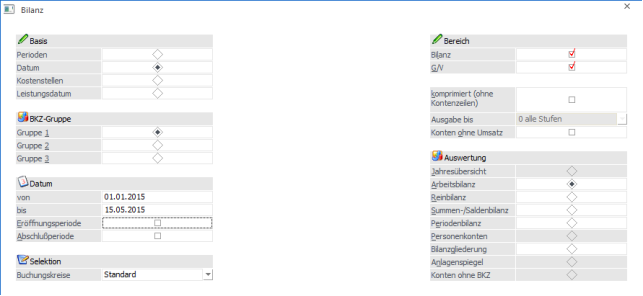
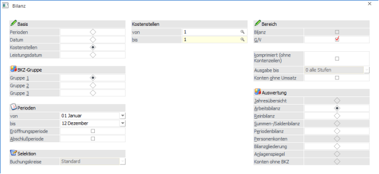
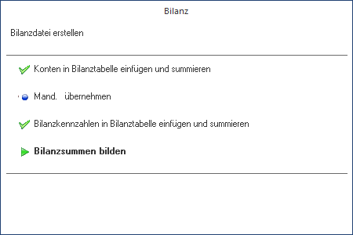
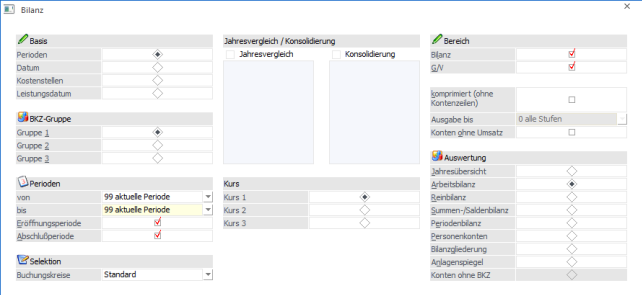
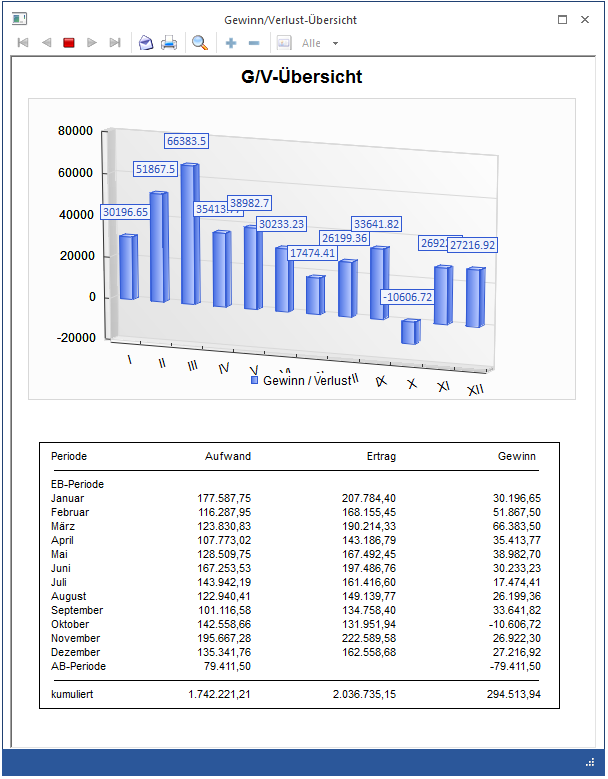
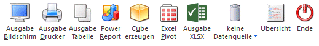

Mit WinLine FIBU sind Sie jederzeit in der Lage, sich eine Bilanz auszudrucken. Der Bilanzdruck wird im Menüpunkt
1 Auswertungen
1 Bilanz
aufgerufen.
Ø Gewinnvortrags-Konto
Das Gewinn- und Verlustkonto kann im Programm WinLine START / Optionen / FIBU-Parameter eingetragen werden. Dadurch ist es möglich, den Gewinn- oder Verlust in der gesetzlich vorgegeben Staffelform der Erfolgsrechnung anzudrucken.
Bevor die Bilanz gedruckt werden kann, müssen die erfassten Werte summiert werden. Dies kann auf Basis von verschiedenen Kriterien durchgeführt werden:

ü Perioden
Es kann die
Einschränkung von Periode bis Periode durchgeführt werden, wobei diese
Einschränkung nur bei der Summen- u. Saldenbilanz und der Periodenbilanz
berücksichtigt wird. Für alle anderen Bilanzarten erfolgt die Summierung immer
vom Beginn des Wirtschaftsjahres (unabhängig davon welche Von-Periode
eingetragen ist) bis zur vorgeschlagenen Buchungsperiode. Zusätzlich kann
entschieden werden, ob die Werte der Eröffnungs- und Abschlussperiode
berücksichtigt werden sollen.
Ø Buchungskreise
In der Bilanz kann auf Buchungskreise eingeschränkt werden. Werden alle Buchungskreise ausgewählt, erfolgt die Bilanzausgabe auf das "gesamte" Unternehmen. Werden nur ausgewählte Buchungskreise ausgegeben, werden nur die Werte dieser Buchungskreise aus der Bilanz gerechnet.
Die Auswahllistbox ist nur aktiv, wenn die entsprechende Lizenz vorhanden ist.
Bei der Periodenbilanz gibt es auch die Möglichkeit, einen Vorjahresvergleich und eine Konsolidierung durchzuführen. Für den Vorjahresvergleich muss dazu die Checkbox
Ø Jahresvergleich
aktiviert werden. Hier können die Wirtschaftsjahre verglichen werden, die in einem Mandanten vorhanden sind.
Hinweis
Sollte bei einem Konto ein ungültiges Vorjahreskonto im Kontenstamm hinterlegt sein, wird bei der Ausgabe des Jahresvergleichs eine entsprechende Warnmeldung angedruckt. Sie haben die Möglichkeit, die betroffenen Konten zu editieren, ein Protokoll auszugeben, oder diese Meldung zu ignorieren.
Die Konsolidierung wird über die gleichnamige Checkbox
Ø Konsolidierung
aktiviert. In der Tabelle unterhalb der Checkbox können nun bis zu 99 verfügbare Mandanten zur Konsolidierung ausgewählt werden. Beim Ausdruck am Bildschirm/Drucken können allerdings nur 5 Mandanten berücksichtigt werden, bei der Ausgabe auf Tabelle werden alle Mandanten berücksichtigt.
Achtung
Die Mandanten müssen alle in EINER Datenbank liegen!
Kombination von Jahresvergleich und Konsolidierung
Sie können auch den Jahresvergleich mit der Konsolidierung kombinieren. Für diese Auswertungsmethode stehen die Arbeitsbilanz, die Reinbilanz und die Periodenbilanz zur Verfügung.
Hinweis
Bilanzausdrucke mit Vorjahresvergleich stehen nur in der Arbeitsbilanz, Reinbilanz, Periodenbilanz und der Bilanzgliederung zur Verfügung.

ü Datum
Es kann eine Bilanz bis
zu einem bestimmten Zeitraum erstellt werden. Hier werden nur die Werte
berücksichtigt, die in diesem Zeitraum gebucht wurden. Als Startdatum ist immer
der Beginn des Wirtschaftsjahres (wird automatisch vorgeschlagen) einzutragen.
Zusätzlich kann entschieden werden, ob die Werte der Eröffnungs- und
Abschlussperiode berücksichtigt werden sollen.
Hinweis 1
Bei einer Bilanz nach Datum stehen die Bilanztypen "Jahresübersicht", "Summen-/Saldenbilanz" und der Anlagenspiegel nicht zur Verfügung.

ü Kostenstellen
Ausgabe der
Bilanz auf Basis von Kostenstellen wobei eine Einschränkung nach Kostenstellen
sowie auf bestimmte Perioden möglich ist. Dadurch werden nur gebuchte Werte
angezeigt, die auch auf Kostenstellen gebucht wurden und in dem eingeschränkten
Auswertebereich liegen.
Hinweis 2
Bei einer Bilanz nach Kostenstellen stehen die Bilanztypen "Jahresübersicht", "Summen-/Saldenbilanz" und der Anlagenspiegel nicht zur Verfügung.
Ø BKZ-Gruppe
Über diesen Radiobutton kann selektiert werden, welche der 3 BKZ-Strukturen, die im BKZ-Stamm angelegt und editiert werden können, ausgewertet werden soll.
Ø Kurs 1, Kurs 2, Kurs 3
Bei einer Bilanzkonsolidierung kann über diesen Radio-Button der Fremdwährungskurs für die Bewertung der Konsolidierungsmandanten gewählt werden.
Beispiel
Der aktuelle Mandant verwendet die Landeswährung EUR und soll mit einem Mandanten, der in USD geführt wird, verglichen werden. Über diese Radiobuttons wird nun gesteuert, zu welchem Kurs (aus dem FW-Stamm des Hauptmandanten) die Beträge des USD-Mandanten umgerechnet werden sollen.
Nach Bestätigen der OK-Taste wird der Bilanzsummierungslauf gestartet.

Achtung
Für die ausgewählten Vorjahresmandanten wird im Zuge des Bilanzvergleiches ein Summierungslauf durchgeführt, um damit die Vergleichswerte zur Anzeige mit dem aktuellen Mandanten zu erhalten.
Achtung
Bei der Bilanz werden nur Hauptbuchkonten und Konten ausgewertet, die keinem Hauptbuchkonto zugewiesen sind, d.h. Nebenbuchkonten werden nicht für die Bilanz ausgewertet. (Achtung: die BKZ von einem Hauptbuchkonto und dessen Nebenbuchkonten stimmen immer überein!).
Auch für die Ausgabe der Journalbilanz werden die Hauptbuchkonten im Journal verwendet.
Besonderheiten beim Aufruf dieses Fenster aus dem Menüpunkt "Reportdefinition"

Ø Basis = Perioden
In der Auswahllistbox der Perioden gibt es zusätzlich den Eintrag "99 aktuelle Periode". Falls dieser Eintrag gewählt wurde, wird bei der Vorschau des Reports bzw. beim Erzeugen des Reports die Periode mit der Periode des aktuellen Datums belegt.
Ø Basis = Datum
Die Datumsfelder sind standardmäßig keine Auswahllistboxen. Falls die Angaben aus der Auswahllistbox benötigt werden, muss im Feld der Eintrag "D" erfolgen.
ü 1 Heute
ü 2 Gestern
ü 3 Anfang des Monats
ü 4 Ende des Monats
ü 5 Anfang des letzten Monats
ü 6 Ende des letzten Monats
ü 7 Anfang der Woche
ü 8 Ende der Woche
ü 9 Anfang der letzten Woche
ü 10 Ende der letzten Woche
Falls einer dieser Einträge gewählt wurde wird bei der Vorschau des Reports bzw. beim Erzeugen des Reports das Datum entsprechend belegt.
Ø Bilanz / GuV
Selektion, ob die Bilanz (Aktiv/Passiv-Rechnung) oder die Gewinn- und Verlustrechnung ausgegeben werden soll. Wenn eine Kostenstellenbilanz ausgegeben wird, dann kann die Option "Bilanz" nur bei "Ausgabe auf Tabelle" aktiviert werden.
Auswahl des Bilanztyps (auf Basis von Perioden)
ü Jahresübersicht
Alle Perioden
nebeneinander
ü Arbeitsbilanz
Detailliert
gegliedert, mit BKZ und Kontonummern
ü Reinbilanz
Detailliert wie
Arbeitsbilanz, aber ohne Nummerierungen
ü Summen-/Saldenbilanz
ü Periodenbilanz
Nur die
eingegrenzten Perioden sind in den Summen enthalten (z.B. nur Periode 4 bis
6)
ü Personenkonten
Liste aller
Personenkonten, die gemäß der Bilanzgliederung ausgegeben werden.
Hinweis
Bei der Bilanzausgabe mit Auswertungstyp "Personenkonten" werden nur Personenkonten berücksichtigt, die nicht Nebenbuchkonten sind, d.h. die keinem Hauptbuchkonto zugewiesen sind.
ü Bilanzgliederung
ü Anlagenspiegel
Der
Anlagenspiegel kann im Rahmen des Bilanzausdruckes mit der gesetzlich
vorgegebenen Gliederung ausgegeben werden.
ü Konten ohne BKZ
Mit dieser
Option wird eine Liste aller Konten ausgegeben, die ohne BKZ angelegt sind.
Diese Option kann allerdings nur dann ausgegeben werden, wenn in der Auswahl die
BKZ 2 oder BKZ 3 eingestellt wurde (in der BKZ 1 kann es keine Konten ohne BKZ
geben).
Auswahl des Bilanztyps (auf Basis Datum/Kostenstellen)
ü Arbeitsbilanz
ü Reinbilanz
ü Periodenbilanz
Ø Komprimiert (ohne Kontenzeilen)
aktiv:
Es werden nur die
Bilanzgliederungskennzahlen und die entsprechenden Summen angedruckt.
inaktiv:
Es werden neben den
Bilanzgliederungskennzahlen auch die einzelnen Konten mit ihren Werten
angedruckt.
Ø Ausgabe bis
Wenn die Option "Komprimiert (ohne Kontenzeilen)" aktiviert ist, kann hier entschieden werden, bis zu welcher BKZ-Stufe die Ausgabe erfolgen soll. Zur Auswahl stehen:
ü 0 alle Stufen
ü 1 Stufe
ü 2 Stufe
ü 3 Stufe
ü 4 Stufe
Ø Konten ohne Umsatz
aktiv:
Alle Konten werden
angezeigt
nicht aktiv:
Nur Konten die bebucht wurden, werden
in der Bilanz ausgewertet.
Hinweis
Unabhängig von dieser Einstellung gilt Folgendes:
Ein Konto wird bebucht und mit einer weiteren Buchung wieder ausgeglichen: Kontensaldo = 0
-> das Konto wird nicht gedruckt, die BKZ wird ebenfalls nicht gedruckt.
Zwei Konten der gleichen BKZ werden bebucht: Kontensaldo der einzelnen Konten ist <> 0. Beide Kontensalden zusammen gleichen sich jedoch aus
-> beide Konten sowie auch die BKZ werden gedruckt (obwohl der BKZ-Saldo 0 ist).
Ø Übersicht-Button
Durch Betätigen der Drucktaste Übersicht rufen Sie einen Überblick über die Gewinn- und Verlustrechnung Ihres Betriebes ab, wobei für alle Perioden der Gewinn bzw. Verlust sowohl in Zahlen als auch grafisch dargestellt wird.

Besonderheiten beim Aufruf dieses Fenster aus dem Menüpunkt "Reportdefinition"
Bei der Ausgabe kann nur zwischen Liste und Tabelle unterschieden werden:
ü Bei der Auswahl "Liste" wird bei der Reportvorschau bzw. -ausgabe eine Spooldatei erzeugt, die archiviert wird.
ü Bei der Auswahl "Tabelle" wird bei der Reportvorschau bzw. -ausgabe eine Exceltabelle erzeugt und in das Archiv übergeben.
ü Falls als zusätzlicher Dateiname bei der Reportausgabe ein Name mit der Dateiendung "xls" angegeben wird, so wird die Ausgabe als "Exceltabelle" gespeichert.
ü Falls als zusätzlicher Dateiname bei der Reportausgabe ein Name mit der Endung "spl" angegeben wird, so wird die Ausgabe als Spooldatei gespeichert.
ü In allen Fällen wird eine Datei mit der Endung "mcs" erzeugt, die z.B. im "MesoCalc" eingelesen werden kann.
Ø Ausdruck
Bei Ausgabe des Anlagenspiegels und der Personenkontenliste wird auf der letzten Seite das Datum der Erstellung angedruckt.
Buttons

Ø Ausgabe Bildschirm
Mit Hilfe des Buttons "Ausgabe Bildschirm" oder der Taste F5 wird die Auswertung am Bildschirm ausgegeben.
Ø Ausgabe Drucker
Durch Anwahl des Buttons "Ausgabe Drucker" wird die Auswertung am Drucker ausgegeben.
Ø Ausgabe Tabelle
Bei der Anwahl des Buttons "Ausgabe Tabelle" wird die Bilanz in Form einer WinLine Tabelle dargestellt.
Ø Power Report
Durch Drücken des Buttons "Power Report" wird die Auswertung auf Basis von Cube-Daten grafisch dargestellt. Die Ausgabe ist individuell anpassbar und erfolgt in der Form von "Widgets", die unterschiedlichsten Darstellungen ermöglichen.
Ø Cube erzeugen
Wenn die Option "Cube erzeugen" gewählt wird (nur möglich, wenn auch die entsprechende Lizenz dafür vorhanden ist), dann wird die Bilanz im "Olap Viewer" angezeigt. In diesem können die Daten nach verschiedenen Gesichtspunkten ausgewertet werden.
Ø Excel Pivot
Durch Anwahl des Buttons "Excel Pivot" werden die selektierten Zeilen in Form einer Pivot Ausgabe in Microsoft Excel (2007 oder höher) angezeigt.
Ø Ausgabe XLSX
Mit Hilfe des Buttons "Ausgabe XLSX" wird die Auswertung mit den von Ihnen definierten Selektionen an Microsoft Excel übergeben.
Ø Datenquelle
Mit Hilfe dieser Auswahl kann definiert werden, ob und wie eine Datenquelle (d.h. ein Snapshot oder eine MasterView) verwendet werden soll.
ü Keine Datenquelle
Bei Auswahl
von "keine Datenquelle" wird keine zuvor angelegte Datenquelle genutzt. D.h. die
Daten werden von der WinLine "live" ermittelt und in der gewünschten Form
ausgegeben.
Hinweis
Da die BI-Ausgabe (z.B. Cube oder Power Report) immer eine Datenquelle benötigt, wird im Hintergrund eine temporäre Datenquelle (Snapshot) gebildet.
ü Datenquelle
erstellen/aktualisieren
Die Daten werden zur Laufzeit ermittelt und an einen
zu definierenden Snapshot übergeben. Nach dem Füllen der Datenquelle wird die
gewünschte Ausgabevariante über die Datenquelle erzeugt. Dieser Vorgang kann mit
einer Zeitverzögerung verbunden sein, da die Daten zusätzlich gespeichert werden
müssen.
ü Datenquelle verwenden
Bei der
Verwendung eines Snapshots werden die Daten direkt aus der Datenquelle gelesen,
d.h. die für die Ausgabe benötigten Daten können ohne Verzögerung in der
gewünschten Variante ausgegeben werden.
Wird hingegen eine MasterView
gewählt, so werden die Daten für die Ausgabe "live" ermittelt, wobei diese so
aktuell sind wie die zugrunde liegenden Datenquellen.
Hinweis
Der Button "Datenquelle verwenden" wird nur angeboten, wenn für diesen Bereich (bezogen auf den aktuellen Benutzer / Mandanten) zumindest eine private oder öffentliche Datenquelle existiert. Des Weiteren stehen nur die Ausgabevarianten "Power Report", "Cube erzeugen", "Excel Pivot" und "Ausgabe XLSX" zur Verfügung.
Hinweis
Weitere Informationen zum Thema "Datenquellen" entnehmen Sie bitte dem Kapitel "Die Datenquelle".
Ø Übersicht
Mit dem Button "Übersicht" wird die Gewinn/Verlust-Übersicht geöffnet. Hier wird diese Übersicht anhand einer Grafik und einer Tabelle dargestellt.
Ø Ende
Durch Drücken des Buttons "Ende" bzw. der Taste ESC wird das Fenster geschlossen.